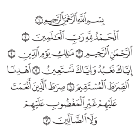

Where should a verse's drawer open?
Tap a verse on the page below. A drawer gathers everything about that verse — its label, the verses it connects to, its roots, the scholar's note, share — into one place. The question is where that drawer should appear. Two of the four choices differ in something no picture settles: whether the drawer covers the verse you are reading, and whether your eye has to cross to the other page. So try each with your hand.
A few words, once
- Verse
- one numbered sentence of the Qur'an (1:1 is the first verse of the first surah).
- Surah
- a chapter. This page shows al-Fātiḥah, the opening surah, on the right leaf.
- Spread
- the two facing pages you see on a wide screen. On a phone you see one.
- Leaf
- one page of the open book. In the Qur'an the right leaf is read first.
- Gutter
- the fold down the middle, where the two leaves meet.


Related verses
Shared roots
The scholar's note
The commentary on this verse appears here in the demo build. (Held text is not shown on this public design page.)
What am I choosing between?
A — leave it scattered (today). The related verses sit in a little rail beside the verse, a row of controls runs along the bottom, and notes float over the page. Nothing is wrong with any one piece; the cost is that you look in three places for one verse. On the list because doing nothing is always a real choice — it is the one to beat.
B — one drawer from the bottom, on every screen. The same panel rises from the bottom whether you are on a phone or a wide spread. One shape to learn everywhere. The felt cost is on the spread: it covers both leaves, and it forgets which leaf you pressed.
C — bottom on a phone, a side panel on the verse's own leaf (recommended). On a phone, the bottom drawer of B. On a spread, the drawer opens on the same leaf as the verse you pressed. Your eye and hand stay on one side of the book. The felt cost: the drawer shares its leaf with the verse, so it must sit beside the text without hiding it — try whether it does.
D — bottom on a phone, a side panel on the other leaf on a spread. Like C, but the drawer opens across the gutter, to leave the verse itself completely uncovered. This is what the app does today for its existing panels. The felt cost: the drawer and the verse it is about are on opposite pages — does that feel connected, or split?
What to feel for
Does the drawer cover the verse you just tapped? When you tap left, then right, does your attention stay put or get thrown across the fold? Does the drawer changing shape between phone and spread bother you, or do you not even notice? The answer that matters is the one your hand finds, not the one this page argues.
The full written design — why this is being asked, what it consolidates, and what it is not settling — is in the design record. C and D are the same code with the side flipped; the winner becomes the app and the other is deleted.
Drawn on the real printed pages the app ships (al-Fātiḥah and the start of al-Baqarah), at about the size a reader uses. The page art is outlined shapes, not text. Related-verse and root chips here are stand-ins for the app's own, shown to place the drawer, not to reproduce any held content.